Timepieces I admire — for their engineering, history, and design. A list that grows slowly and on purpose.
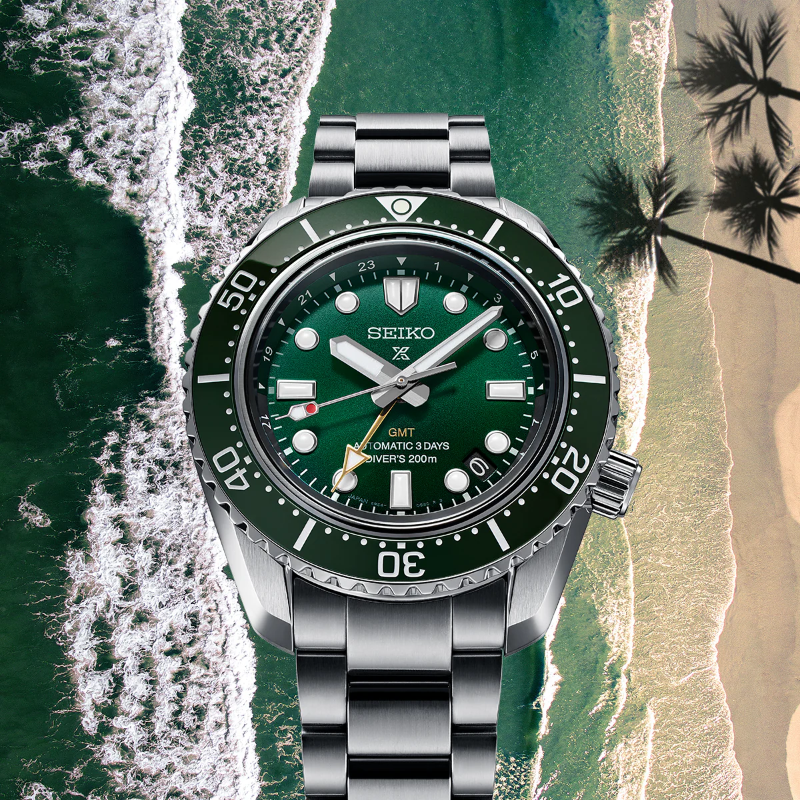
A bold yet accessible GMT dive watch with Seiko's rugged engineering and signature marine green tone.
Owned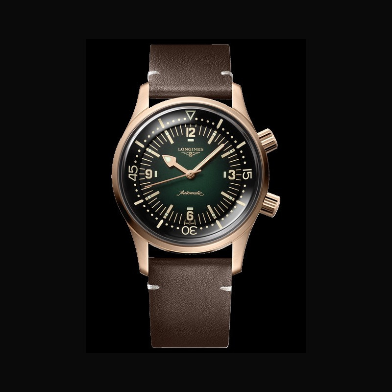
A neo-vintage diver with elegance and heritage, modernized to a wearable 39mm.
Planned · 2028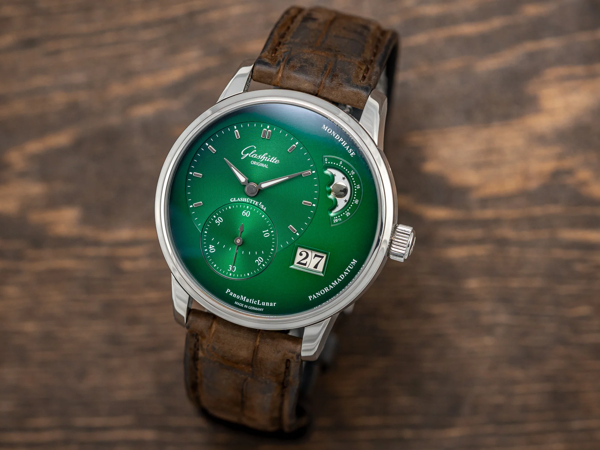
German precision meets asymmetrical dial aesthetics — moonphase mastery from Glashütte.
Planned · 2032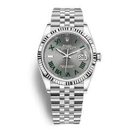
Rolex's iconic fluted bezel, Jubilee bracelet, and the distinctive Wimbledon slate dial.
Planned · 2027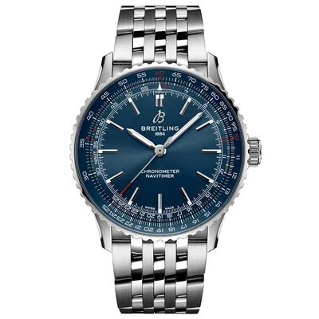
A pilot's toolwatch with legacy slide rule and functional GMT — aviation heritage distilled.
Planned · 2029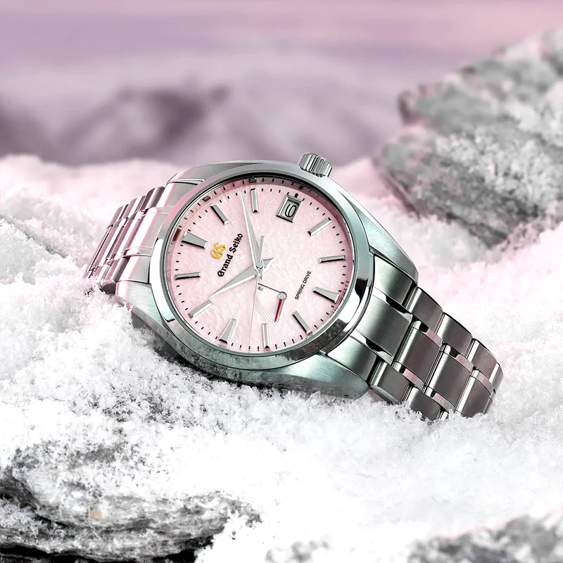
Renowned for its textured snowflake dial and Spring Drive movement — a harmony of precision and art.
Planned · 2029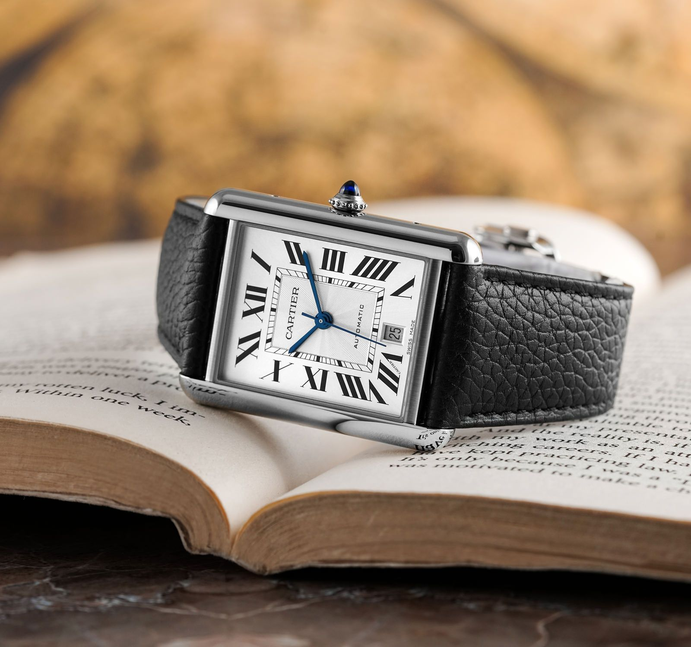
A timeless dress piece inspired by WWI tanks — pure French elegance and enduring geometric legacy.
Planned · 2028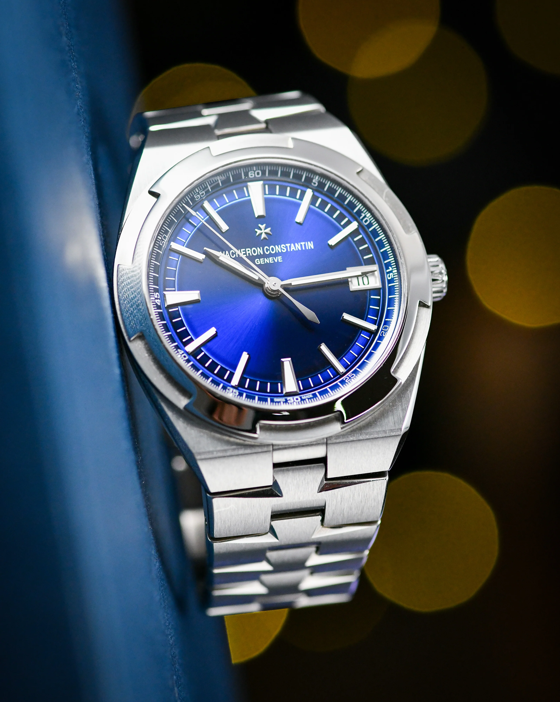
One of the Holy Trinity sports watches — versatile, finished to absolute perfection.
Planned · 2038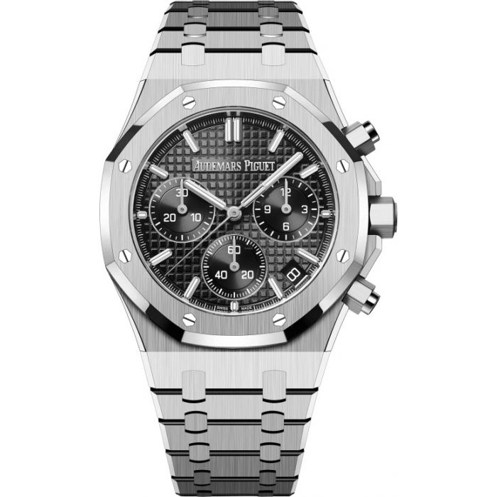
Genta's octagonal design icon with integrated bracelet and tapisserie dial — the original luxury sport watch.
Planned · 2040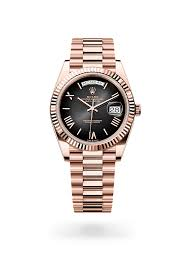
The president's choice — luxury and function in perfect harmony, with the distinctive Day-Date display.
Planned · 2035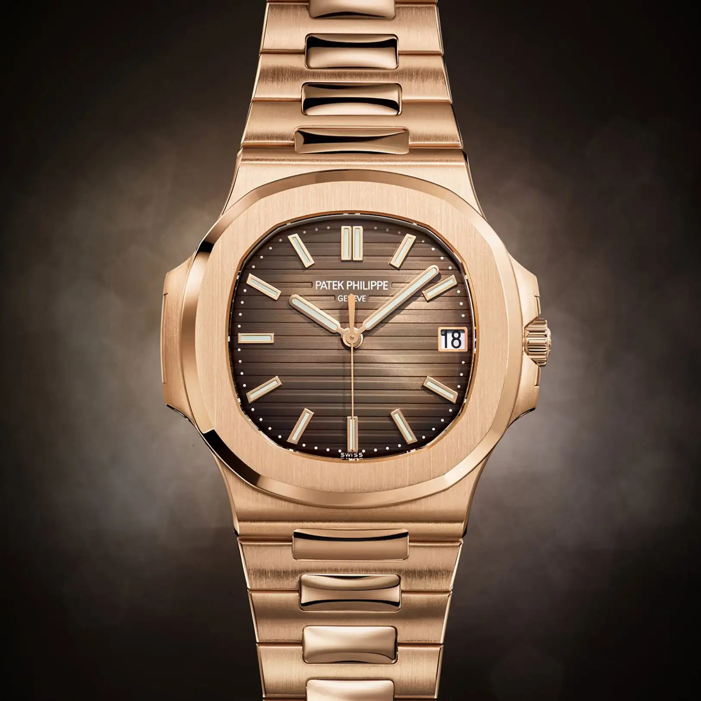
Rare, refined, and revolutionary — Genta's other masterpiece. The grail for any serious collector.
Planned · 2050